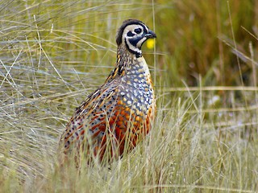

Cyrtonyx ocellatus
The medium Ocellated Quail is 20.5 to 23 cm (8.1 to 9.1 in) long. The male weighs 218 g (7.7 oz) and the females weigh about 182 g (6.4 oz). The adult's face has a black and white harlequin pattern. It's crown and nape are buffy brown to olive brown with with a thick tawny crest on the rear of the crown (male). The females have buffy and black faces with the tawny crest and the upperparts brown with buff lines. Breast and belly are dark red with black bars and spots.